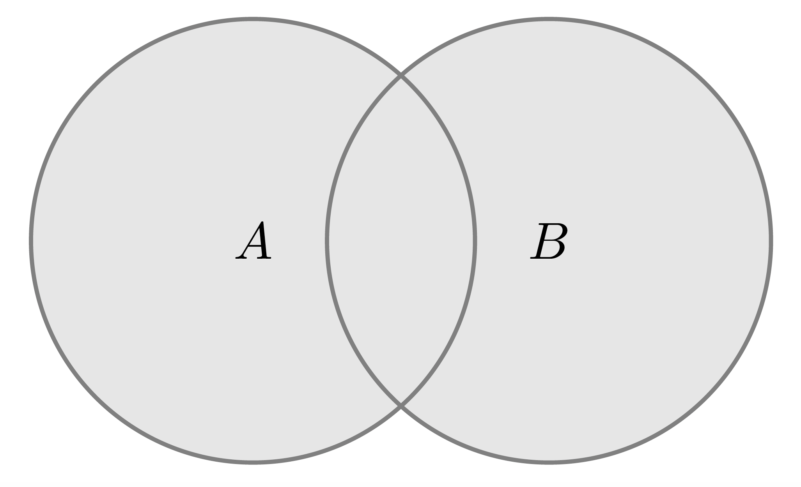
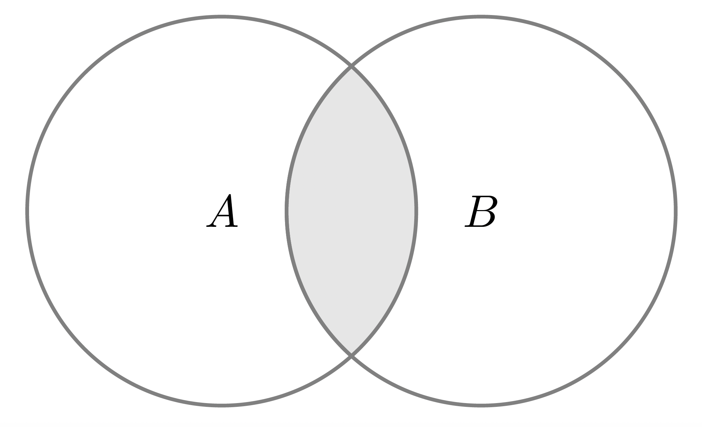
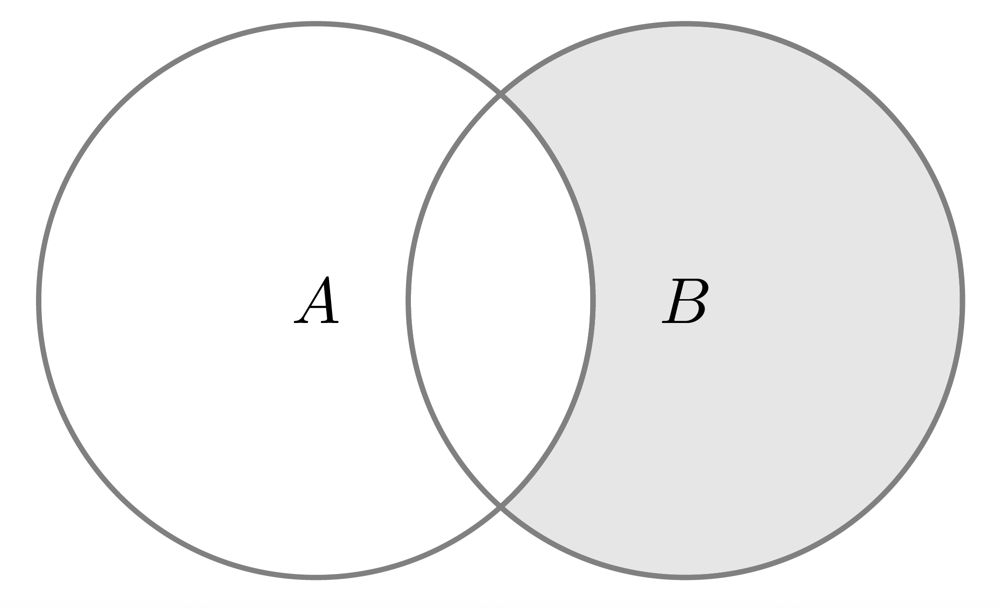

集合與映射
集合(Set)
所謂集合，係一個將具特定性質之具體或抽象對象匯集的整體，其中稱的對象即是集合中的元素(element)。一般來說，我們會用以下方式分別表示集合與其中的元素：
集合：大寫字母，如 \(S, T, A, B, X, Y, \cdots\)
元素：小寫字母，如 \(s, t, a, b, x, y, \cdots\)
若 \(x\) 是集合 \(S\) 的元素，則寫成 \(x \in S\)；若 \(y\) 非 \(S\) 的集合，則寫成 \(y \notin S\)。常見的集合包含整數、正整數、實數等集合，分別記作 \(\mathbb{Z}, \mathbb{N}^{+}, \mathbb{R}\)。
集合的表示方式包含以下兩種，但首先必須注意，我們必須大括號將集合內的元素包住，即 \(\{\}\)。
- 枚舉法：即將集合內所有元素列出，如色光三原色(primary color)可以表示為 \[ \text{primary color} = \{\text{red}, \text{green}, \text{blue}\} \]
但如果是像正整數這種元素個數無限延伸的集合，我們為了方便，會用 \(\cdots\) 省略中間的部分元素，如 \[ \mathbb{N}^{+} = \{1,2, \cdots, n, \cdots\} \]
或是整數可以表達為 \[ \mathbb{Z} = \{0, \pm 1, \pm 2, \cdots, \pm m, \cdots\} \]
- 描述法：若集合 \(S\) 內的元素 \(x\) 可透過某種特性 \(P(\cdot)\) 描繪，我們便用表達式的方式將其寫下，即 \[ S = \{x\lvert P(x)\} \]
例如我們將 \(2\) 的平方根匯集起來形成一個集合： \[ A = \{x \lvert x^{2} = 2\} \] 再例如我們可以將有理數透過下列的方式表達： \[ \mathbb{Q} = \{x\lvert x = \frac{q}{p}, p \in \mathbb{N}^{+}, q \in \mathbb{Z}\} \]
注意到以下兩個概念：
集合中的元素沒有次序關係：也就是說集合內的元素先出現或後出現不具任何特殊意義。此外，重複也不具任何意義。
空集合(empty set)：即集合內不包含任何元素，記成 \(\varnothing\)，例如 \[ \varnothing = \{x \lvert x \in \mathbb{R} \text{ and } x^{2} + 1 = 0\} \]
子集(Subset)
假設存在兩個集合 \(S\) 與 \(T\)，若 \(S\) 的所有元素都屬於 \(T\)，則稱 \(S\) 為 \(T\) 的子集，記為 \(S \subset T\)。我們上面提到的一些重要集合的關係也可以用子集表示： \[ \mathbb{N}^{+} \subset \mathbb{Z} \subset \mathbb{Q} \subset \mathbb{R} \]
而根據 \(S\) 與 \(T\) 的關係，可以得到以下推論： \[ x \in S \Rightarrow x \in T \]
其中 \(\Rightarrow\) 表示隱含(imply)。若 \(S\) 至少有一個元素不屬於 \(T\)，則稱 \(S\) 不為 \(T\) 的子集，記為 \(S \not\subset T\)。
若 \(S \subset T\)，但在 \(T\) 中存在一個元素 \(x\) 不屬於 \(S\)，則稱 \(S\) 為 \(T\) 的真子集(proper set)，記成 \(T \not\subset S\)。
【命題 1.1】： 若 \(S\) 為一個集合，則 \[ S \subset S, \varnothing \subset S \]
白話文翻譯就是：若空集合不是 \(S\) 的子集，則在空集合中可以至少找到一個元素不屬於 \(S\)，然而空集合不包含任何元素空集合是 \(S\) 的子集。
【例】 令 \(T = \{a, b, c\}\)，求其子集。
【解】 \(T\) 的子集可以列舉如下：
\[ \varnothing, \{a\}, \{b\}, \{c\}, \{a, b\}, \{b, c\}, \{a, c\}, \{a, b, c\} \]
可知 \(T\) 有 \(2^{3} = 8\) 個子集，且有 \(2^{3} - 1 = 7\) 個真子集。
\(\square\)
【定義 1.1】假設集合 \(S\) 與 \(T\) 的元素都相等，則稱 \(S\) 與 \(T\) 相等，記成 \[ S = T \Longleftrightarrow S \subset T \text{ and } T \subset S \]
在數學分析中，我們常見到的集合是 \(\mathbb{R}\)，因此以下針對其子集進行說明。討論實數的子集時，一般來說都是區間(interval)，包含：
開區間(open interval)： \[ (a, b) = \{x \lvert x \in \mathbb{R} \text{ and } a < x < b\} \]
閉區間(closed interval)： \[ [a, b] = \{x \lvert x \in \mathbb{R} \text{ and } a \leq x \leq b\} \]
半開半閉區間(semi-open-closed interval)： \[ \begin{aligned} (a, b] &= \{x \lvert x \in \mathbb{R} \text{ and } a < x \leq b\}\\ [a, b) &= \{x \lvert x \in \mathbb{R} \text{ and } a \leq x < b\} \end{aligned} \]
若一區間表示為 \((-\infty, \infty)\)，即代表整個實數。
集合的關係與運算
如同數字一般，集合也有其四則運算，分別為聯集、交集、差集、補集。假設 \(A\) 與 \(B\) 為兩個集合，則
- 聯集(union)：所謂聯集，代表 \(A\) 與 \(B\) 中所有元素匯集的集合，記為 \[ A \cup B = \{x \lvert x \in A \text{ or } x \in B\} \]
圖示如下：

- 交集(intersection)：即 \(S\) 與 \(T\) 共同元素匯集而成的集合，記為 \[ A \cap B = \{x \lvert x \in A \text{ and } x \in B\} \]
示意圖如下：

例如我們令 \(S = \{a, b, c\}\) 與 \(T = \{b, c, d, e\}\)，則 \[ \begin{aligned} A \cup B &= \{a, b, c, d, e\}\\ A \cap B &= \{b, c\} \end{aligned} \] - 差集(minus)：指屬於 \(B\) 但不屬於 \(A\) 的元素之集合，記為 \[ B \setminus A = \{x \lvert x \in B \text{ and } x \notin A\} \]
也就是說扣除屬於 \(B\) 的元素，剩下的就是 \(A\) 的元素。示意圖如下：

- 補集(complement)：假設空間 \(S\) 中僅有 \(X\) 這個集合，則其補集定義為 \[ X^{c} = \{x \lvert x \in S \text{ and }x \notin X\} = S \setminus X \]
【例】若 \(S = (a, b)\)，則 \(S^{c} = (-a, a] \cup [b, +\infty)\)
集合具有一些性質：
交換律(commutative property)： \[ \begin{aligned} A \cup B &= B \cup A\\ A \cap B &= B \cap A \end{aligned} \]
結合律(associative property)： \[ \begin{aligned} (A \cup B) \cup C &= A \cup (B \cup C)\\ (A \cap B) \cap C &= A \cap (B \cap C) \end{aligned} \]
分配律(distributive property)： \[ \begin{aligned} A \cap (B \cup C) &= (A \cap B) \cup (A \cap C)\\ A \cup (B \cap C) &= (A \cup B) \cap (A \cup C) \end{aligned} \]
若 \(n \geq 1\)，則
\[ \begin{aligned} B \bigcap \left(\bigcup^{n}_{i = 1}A_{i}\right) &= \bigcup^{n}_{i = 1}\left(B \bigcap A_{i}\right)\\ B \bigcup \left(\bigcap^{n}_{i = 1}A_{i}\right) &= \bigcap^{n}_{i = 1}\left(B \bigcup A_{i}\right)\\ \end{aligned} \]
- De Morgan 法則：
\[ \begin{aligned} (A \cup B)^{c} &= A^{c} \cap B^{c}\\ (A \cap B)^{c} &= A^{c} \cup B^{c} \end{aligned} \]
若 \(n \geq 1\)，則
\[ \begin{aligned} \left(\bigcup^{n}_{i = 1}A_{i}\right)^{c} = \bigcap^{n}_{i = 1}A_{i}^{c}\\ \left(\bigcap^{n}_{i = 1}A_{i}\right)^{c} = \bigcup^{n}_{i = 1}A_{i}^{c} \end{aligned} \]
Reuse
Citation
@online{sung2023,
author = {Sung, Anthony},
title = {集合與映射},
date = {2023-07-19},
url = {https://yueswater.netlify.app/posts/2023-08-03-real-analysis-set-and-map/},
langid = {en}
}